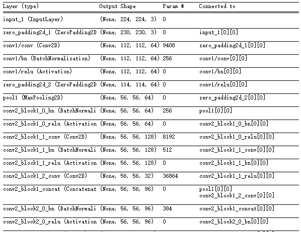
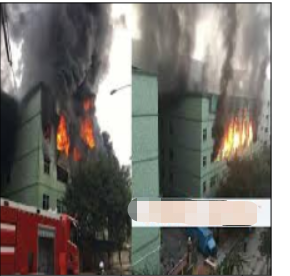
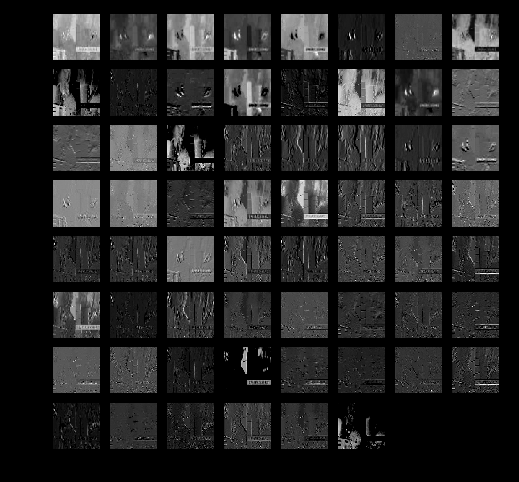
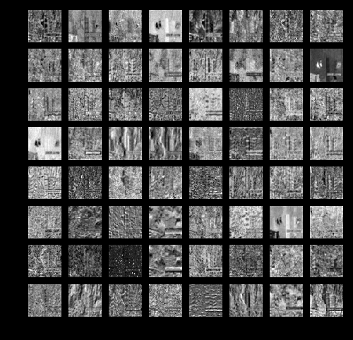
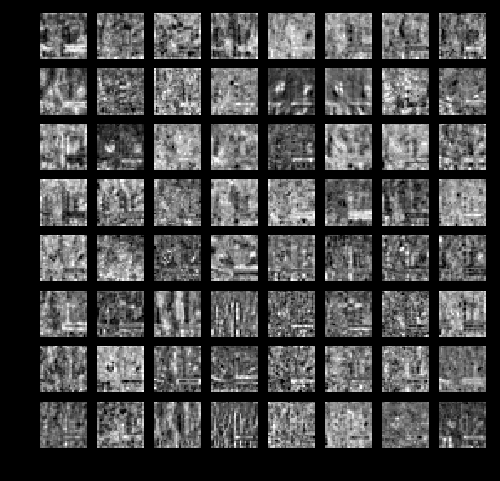
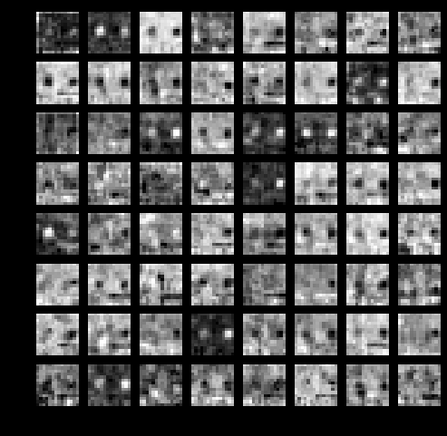
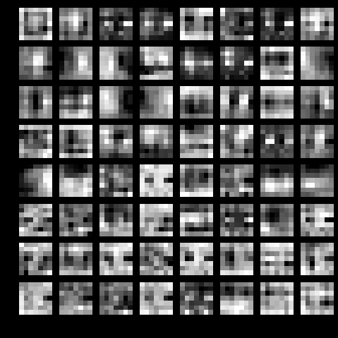
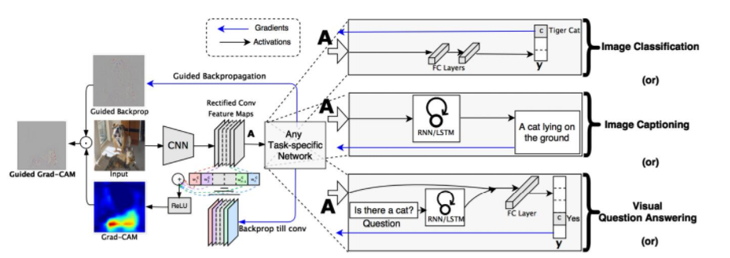
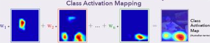
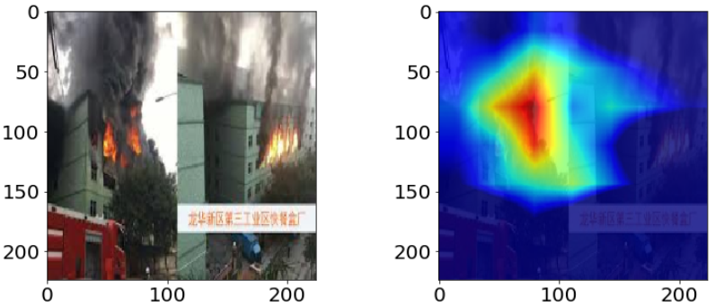

深度学习的过程是一个黑盒子，模型通过大量的权重去学习拟合输入的数据和学习目标，模型的性能很大程度上取决于模型的输入的数据； 深度学习的拟合效果往往出乎我们的的想象，但是模型如何拟合数据和学习目标之间的关系，我们知之甚少。
有时候训练数据和验证集的选取，模型真正学习到的东西和我们人类认知背道而驰。网上看到的一则案例：有人采集了100张隐藏在树丛中的坦克照片，以及另100张仅有树丛的照片， 用神经网络训练一个识别坦克的分类器，在训练和验证上模型都达到了100%的精确度，（100%基本上是数据泄露了）; 原因出在100张坦克是在晴天拍摄，另外100张是阴天拍摄，模型似乎只关注到了天空的颜色。
本文针对keras对常用的机器视觉的可视化做了总结，
本文要可视化模型为densnet121，其他模型类似，只是卷积层不一样，目标是对于火灾的识别
from keras.applications import DenseNet169
from keras.preprocessing import image
from keras.models import Model
from keras.layers import Dense, GlobalAveragePooling2D
from keras import backend as K
# 构建不带分类器的预训练模型
base_model = DenseNet169(weights='imagenet', include_top=False)
# 添加全局平均池化层
x = base_model.output
x = GlobalAveragePooling2D()(x)
# 添加一个全连接层
x = Dense(1024, activation='relu')(x)
# 添加一个分类器，假设我们有200个类
predictions = Dense(200, activation='softmax')(x)
# 构建我们需要训练的完整模型
model = Model(inputs=base_model.input, outputs=predictions)
查看模型结构
model.summary()

对每一层卷积核的可视化帮助我们了解算法抽取的特征情况
可以通过keras中的K.function封装输入到输出的函数，获取指定层的输出
# 训练好的模型为model.h5
from keras import backend as K
from keras.models import load_model
import tensorflow as tf
# 加载模型
model_ = load_model('./model.h5')
# 设置为测试阶段
K.set_learning_phase(0)
graph = tf.get_default_graph()
img_file = './test.jpg'
img = cv2.imread(img_file)
img = cv2.resize(img, (224, 224))
img = img.astype('float32')
img = img / 255.0 * 2 - 1
img = np.expand_dims(img, 0)
def get_layer_feat_byname(graph, img, model_, layer_name='conv1/relu'):
with graph.as_default():
layer_fn = K.function([model_.layers[0].input, K.learning_phase()], [model_.get_layer(layer_name).output])
layer_output = layer_fn([img, 0])[0]
return layer_output
layer_output1 = get_layer_feat_byname(graph, img, model_, 'conv1/relu')
layer_output2 = get_layer_feat_byname(graph, img, model_, 'pool2_conv')
layer_output3 = get_layer_feat_byname(graph, img, model_, 'pool3_conv')
layer_output4 = get_layer_feat_byname(graph, img, model_, 'pool4_conv')
layer_output5 = get_layer_feat_byname(graph, img, model_, 'conv5_block32_concat')
对于densenet169， 我们可以选择每个dense_block层的最后一个concat，也可以选择transition_block pooling前面的卷积层做展示，当然每一个卷积层都是可以做展示的，卷积层名称可以在summary()可以查到。本文 conv1/relu ,pool2_conv,pool3_conv,pool4_conv和最后的conv5_block32_concat
我们看下特征的可视化例子

conv1/relu ,pool2_conv,pool3_conv,pool4_conv和最后的conv5_block32_concat    
可以看出
由于每一层的特征数较多，只能初略观察下对目标的响应情况。而具体某个类别对应到图片的那个区域响应最大，也就是对该类别的识别贡献最大，没有一个直观的可视化。2016年这篇文章给出了很好的解决方案，而且实现比较简单，Grad-CAM: Visual Explanations from Deep Networks via Gradient-based Localization。 
Grad-CAM思想来源CAM（Class Activation Mapping），区别在于计算特征的响应权重不同，CAM采用GAP层后的所有权重，因而CAM必须要有GAP层。而Grad-CAM采用目标类别对特征的梯度来作为响应权重， 对所有网络结构都适用。

过程描述
def output_heatmap(model, last_conv_layer, img):
"""Get the heatmap for image.
Args:
model: keras model.
last_conv_layer: name of last conv layer in the model.
img: processed input image.
Returns:
heatmap: heatmap.
"""
# predict the image class
preds = model.predict(img)
# find the class index
index = np.argmax(preds[0])
print('index: %s' % index)
# This is the entry in the prediction vector
target_output = model.output[:, index]
# get the last conv layer
last_conv_layer = model.get_layer(last_conv_layer)
# compute the gradient of the output feature map with this target class
grads = K.gradients(target_output, last_conv_layer.output)[0]
# mean the gradient over a specific feature map channel
pooled_grads = K.mean(grads, axis=(0, 1, 2))
# this function returns the output of last_conv_layer and grads
# given the input picture
iterate = K.function([model.input], [pooled_grads, last_conv_layer.output[0]])
pooled_grads_value, conv_layer_output_value = iterate([img])
# We multiply each channel in the feature map array
# by "how important this channel is" with regard to the target class
for i in range(conv_layer_output_value.shape[-1]):
conv_layer_output_value[:, :, i] *= pooled_grads_value[i]
# The channel-wise mean of the resulting feature map
# is our heatmap of class activation
heatmap = np.mean(conv_layer_output_value, axis=-1)
heatmap = cv2.resize(heatmap, (img.shape[1], img.shape[2]), cv2.INTER_LINEAR)
heatmap = np.maximum(heatmap, 0)
heatmap /= np.max(heatmap)
print(heatmap.shape)
return heatmap, index
from keras import backend as K
from keras.models import load_model
import tensorflow as tf
import cv2
# 加载模型
model_ = load_model('./model.h5')
# 设置为测试阶段
K.set_learning_phase(0)
graph = tf.get_default_graph()
img_file = './test.jpg'
img = cv2.imread(img_file)
img = cv2.resize(img, (224, 224))
img = img.astype('float32')
img = img / 255.0 * 2 - 1
img = np.expand_dims(img, 0)
heatmap, index = output_heatmap(model_, 'conv5_block32_concat', img)
我们来看一下效果

本文演示了keras在深度学习可视化的两种方式，希望对你有帮助，欢迎交流@mintel。
总结如下